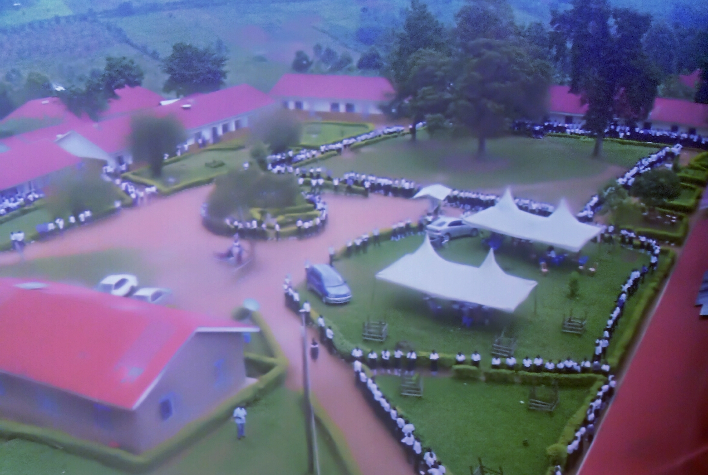

EMAIL DEVELOPER davisnagaba@gmail.com
The Best secondary school in Uganda
Welcome to Kashenyi Secondary School - Pioneering Excellence in Education in Rukungiri District"
Welcome to Kashenyi Secondary School, a leading secondary school in Rukungiri District and Uganda at large, dedicated to empowering students through quality and holistic education. Our school offers a comprehensive curriculum that nurtures academic excellence, personal growth, and community engagement. With a strong focus on innovation and critical thinking, we prepare students for success both in and out of the classroom. At Kashenyi, every student is valued, and our passionate educators work tirelessly to ensure each learner reaches their full potential. Discover more about our diverse programs, experienced staff, and vibrant school culture.